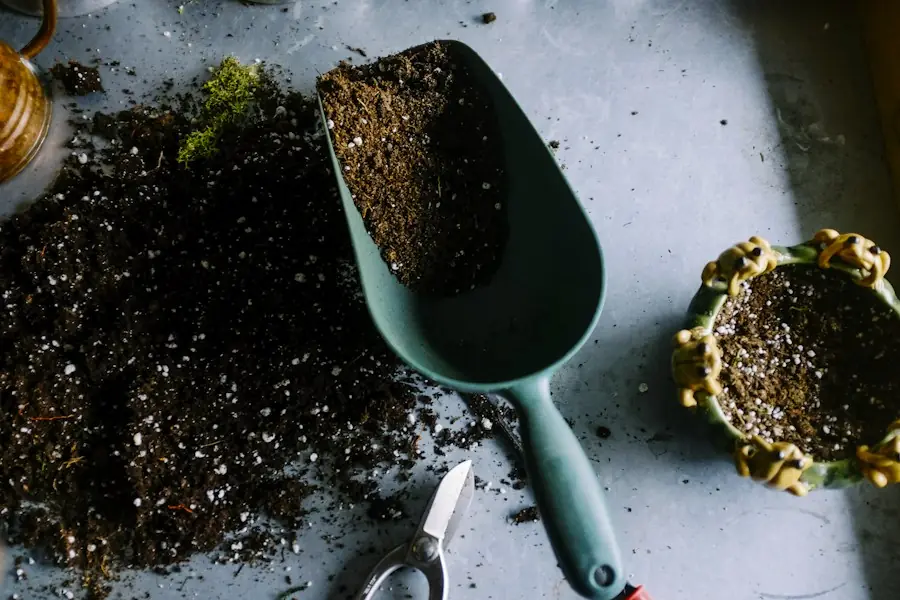

Почніть звідси
Більшість кімнатних рослин гине від надмірної турботи
Перелив — найчастіша причина загибелі рослин, яку ми бачимо. Рослина, якій бракує води, покаже це за день і відновиться за два. А рослина в мокрому ґрунті три тижні мовчить, а потім її вже не врятувати.
Занурте палець у ґрунт на 3–4 см. Якщо до нього прилип вологий ґрунт — з поливом зачекайте. Ця проста звичка збереже більше рослин, ніж будь-які добрива чи гаджети.
Обрати невибагливі рослини